Análisis de la Varianza
ANOVA
7 de octubre de 2026
¿3 pruebas t…?
Media 1 Media 2 Media 3 3 pruebas para una pregunta global.
Preguntar cuántos pares aparecen. Los números corresponden a los tres sustratos. No desarrollar correcciones. Las pruebas que comparten grupos no son independientes.
El riesgo de algún error Tipo I
Tres pruebas, cada una con α = 0,05
5 % → ≈ 14 %
\(1-(1-0{,}05)^3=0{,}142625\approx14{,}3\%\)
Las tres comparaciones comparten grupos y no son independientes; 14,3 % ilustra el problema, no es el valor exacto para este caso.
La fórmula da la probabilidad de al menos un rechazo falso en tres pruebas independientes bajo la nula global. Aquí las comparaciones comparten muestras: se presenta como ilustración de la inflación, no como FWER exacto. No desarrollar correcciones ni pruebas múltiples.
Una prueba global
ANOVA · Una prueba global
\(H_0:\mu_1=\mu_2=\mu_3\)
\(H_1\) : no todas las medias son iguales.
Si rechazamos \(H_0\) , queda pendiente saber cuáles difieren.
H1 significa al menos una media diferente de otra, no que todas sean diferentes. Las medias son poblacionales; observar diferencias muestrales no basta para rechazar.
Una aparente contradicción
Queremos comparar MEDIAS …
…¿por qué se llamaANÁLISIS DE LA VARIANZA?
Miremos los datos
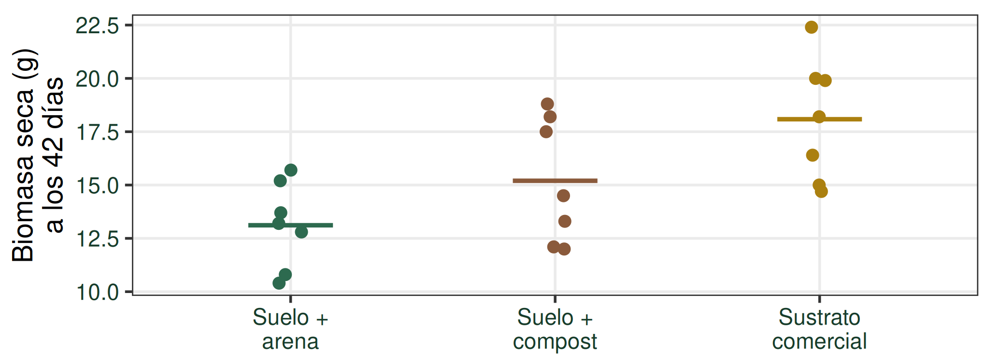
¿Diferencias grandes…
No anticipar F ni p. La escala es biomasa seca (g) a los 42 días, la misma definición operacional que en Clase 10. Datos nuevos para la variante DCA.
Datos simulados; cada punto es una UE y los segmentos horizontales son medias. Esta aclaración se explica oralmente para reservar espacio al gráfico.
Dos fuentes de variación
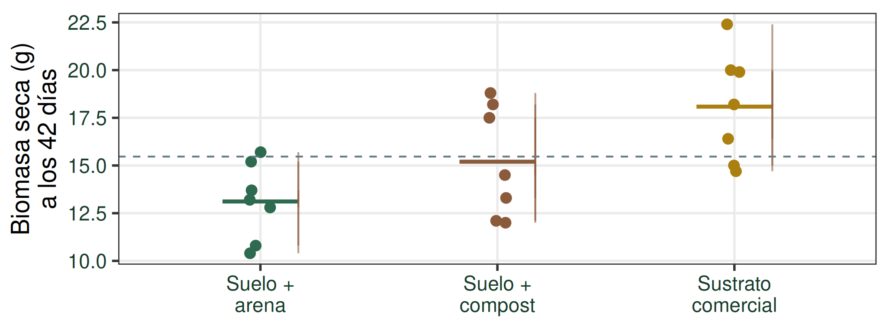
ENTRE: separación de medias DENTRO: diferencias entre UE
Los grupos están definidos por los niveles del factor Sustrato. Segmentos finos: desviaciones respecto de la media del tratamiento. Línea discontinua: media general. La variación entre medias también contiene fluctuación muestral; no es efecto puro.
Variación dentro de los grupos
Suelo + arena · 7 macetas independientes
10,8 g
13,2 g
15,7 g
10,4 g
15,2 g
12,8 g
13,7 g
Mismo tratamiento ≠ misma respuesta
Variación entre UE con igual tratamiento
Conexión con Clase 10. Error experimental no significa equivocación ni sólo error de medición: incluye variación biológica y otras fuentes no explicadas por tratamientos. Esta equivalencia se utiliza en el DCA simple; con bloques, el modelo distingue esa fuente adicional.
La altura del icono sólo sugiere variabilidad; los números debajo son las biomasas reales del conjunto simulado. No se representa una medición de altura. Cada maceta recibe independientemente su tratamiento.
Variación entre grupos
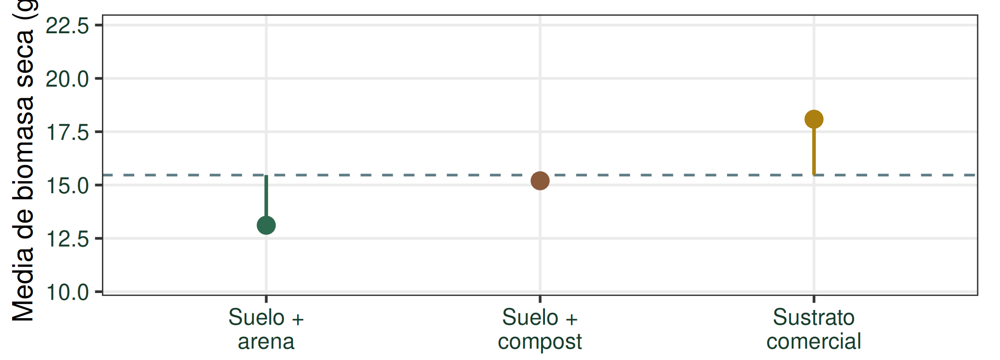
Si el factor tiene efecto, puede manifestarse en la separación de las medias.
Las diferencias observadas entre medias pueden deberse, al menos en parte, al azar.Diferencia observada ≠ efecto puro conocido.
Las medias muestrales no son los parámetros poblacionales. La media general se muestra como referencia discontinua. No interpretar las distancias como efectos puros conocidos.
La idea central del ANOVA
Variación entre grupos
Variación dentro de los grupos
Los grupos están definidos por los niveles del factor Sustrato.
Imagen mental del cociente. Todavía no es F ni la división de SC brutas. Las dos fuentes se compararán mediante sus cuadrados medios. La barra pertenece a una fracción y abarca ambos términos.
Un modelo que explica cada observación
\(Y_{ij}\) Respuesta
= + \(\alpha_i\) Efecto del i-ésimo
+ \(\varepsilon_{ij}\) Error aleatorio asociado
La misma lógica que en regresión:respuesta = parte explicada por el modelo + error.
i: nivel de Sustrato; j: UE dentro del nivel. μ es media de las medias poblacionales; α_i=μ_i−μ con suma α_i=0. ε_ij es error aleatorio no observado, no el residuo ni la definición de error experimental. Después de ajustar, e_ij=Y_ij−Ŷ_ij es el residuo; en este DCA Ŷ_ij=Y barra i. ERROR EXPERIMENTAL: variación entre UE tratadas de la misma manera. La variabilidad residual permite estimarlo en el DCA. La referencia F clásica requiere las condiciones del modelo; se estudiarán en la próxima clase.
Descomponer una observación
\(Y_{ij}-\bar Y=(\bar Y_i-\bar Y)+(Y_{ij}-\bar Y_i)\)
TOTAL = ENTRE + DENTRO
La observación destacada es el máximo real del tercer sustrato. Estado inicial: puntos y media general, distancia total. Después aparecen medias de grupo y ENTRE; luego DENTRO; por último identidad. Todas las longitudes están en la escala de biomasa. TOTAL=Yij−Ybarra; ENTRE=Ybarra_i−Ybarra; DENTRO=Yij−Ybarra_i. Media general y de grupo no son parámetros. e_ij=Yij−Ŷij=Yij−Ybarra_i es el residuo ajustado; no confundirlo con ε_ij. La identidad de SC requiere sumar y anular términos cruzados, no cuadrar sin más cada identidad.
¿Cómo cuantificamos esas fuentes de variación?
Las desviaciones pueden ser positivas o negativas.
\((-2)+(-1)+0+1+2=0\)
\((-2)^2+(-1)^2+0^2+1^2+2^2=10\)
Las elevamos al cuadrado y las sumamos.
\(SC_{Total}=SC_{Sustrato}+SC_{Error}\)
Ejemplo aritmético ilustrativo, no otra muestra de tomate. Las sumas de cuadrados cuantifican magnitud sin cancelación por signos. Sus unidades son g². La partición es una propiedad del ajuste de medias de grupo.
Las distancias se convierten en SC
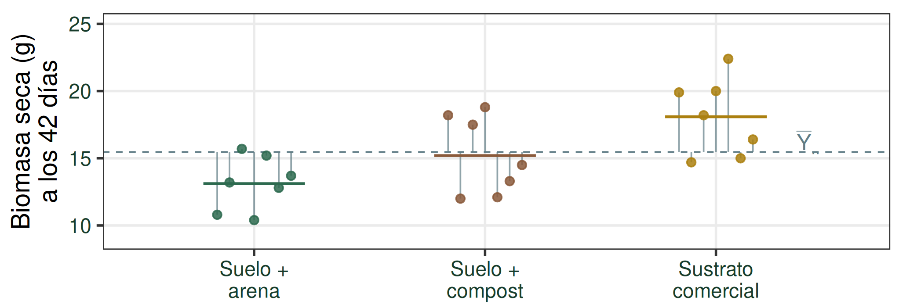
Variación total
\(SC_{Total}=\sum_i\sum_j(Y_{ij}-\bar Y_{\cdot\cdot})^2\)
Variación dentro de los grupos
\(SC_{Error}=\sum_i\sum_j(Y_{ij}-\bar Y_{i\cdot})^2\)
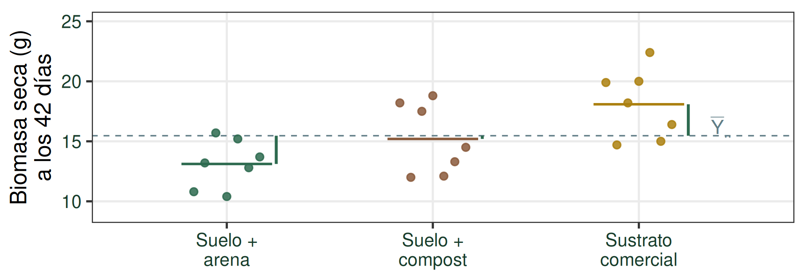
Variación asociada a Sustrato
\(SC_{Sustrato}=\sum_i n_i(\bar Y_{i\cdot}-\bar Y_{\cdot\cdot})^2\)
Cada distancia se eleva al cuadrado; luego sumamos.
Los 21 puntos son exactamente los del DCA. Barras de color: medias de grupo Ybarra_i·; línea discontinua: media general Ybarra··. Se reemplaza el conjunto de segmentos en cada avance: total, dentro, entre. En Sustrato cada diferencia de medias se pondera por ni=7, no se suman sólo tres distancias sin ponderación. En este DCA, dentro de grupos refiere a UE que recibieron el mismo nivel de Sustrato. La identidad individual ya vista conecta con la partición aditiva al sumar cuadrados y anular términos cruzados.
Partición de la variación
\(SC_{Total}=SC_{Sustrato}+SC_{Error}\)
¿Les resulta familiar?
En regresión también particionamos la variación total en una parte explicada por el modelo y una parte residual.
\(SC_{Total}=SC_{Modelo}+SC_{Residual}\)
Clase 08 — Correlación y Regresión, diap. 33 y 36.
Referencias verificadas en QMD y HTML reales de Clase 08, contando la portada: D33 «Observado, ajustado o predicho y residuo»; D36 «Variabilidad de la respuesta». Observado = ajustado + residuo después del ajuste; no confundir residuo con ε del modelo poblacional. SC_Total=Σ(Yij−Ybarra)²; SC_Trat=Σni(Ybarra_i−Ybarra)²; SC_Error=Σ(Yij−Ybarra_i)². Aquí ni=7. Las desviaciones internas suman cero y anulan el término cruzado. Fuentes aditivas en esta partición; no decir que la causalidad se deduce de una partición algebraica.
¿Podemos comparar directamente las SC?
Las fuentes acumulan cantidades diferentes de información independiente.
Formalmente, tienen distintos grados de libertad .
DCA: 3 grupos · 21 observaciones
No son cantidades directamente comparables de variabilidad porque acumulan información independiente con distintas dimensiones. La siguiente lámina concreta los gl sin desarrollar una teoría general.
Los grados de libertad del ejemplo
Fuente de variación
gl
Sustrato
\(k-1=3-1=2\)
Error
\(n-k=21-3=18\)
Total
\(n-1=21-1=20\)
7 UE por grupo → 6 gl
3 × 6 = 18 gl de Error
k = 3 grupos / niveles
Dentro de cada grupo, las siete desviaciones suman cero: con seis conocidas, la séptima queda determinada. Las k desviaciones de medias de grupo respecto de la media general cumplen una restricción (ponderada si tamaños distintos) y tienen k−1 gl. No son meramente correcciones de tamaño.
SC diferentes no bastan para comparar
\(SC_{Sustrato}=\text{87,25}\)
\(SC_{Error}=\text{124,82}\)
No las comparemos como si acumularan la misma información.
Recordemos la varianza muestral:
\(S^2=\frac{\sum(X_i-\bar X)^2}{n-1}=\frac{SC}{gl}\)
Se mantienen SC=87,2495 y 124,8171 del ejemplo; el mayor valor de SC Error no responde todavía la pregunta por el efecto. La varianza muestral motiva dividir por gl.
Cuadrados medios
\(CM=\frac{SC}{gl}\)
Una cantidad tipo-varianza: la SC ajustada por sus grados de libertad.
\(CM_{Sustrato}=\frac{SC_{Sustrato}}{k-1}\)
\(CM_{Error}=\frac{SC_{Error}}{n-k}\)
No afirmar que todo CM es una varianza muestral. Tiene unidades de respuesta al cuadrado. Todavía no se muestran CM calculados ni F observado. La siguiente lámina interpreta CM Error.
¿Qué representa CM Error?
Suelo + compost
4 macetas ilustrativas
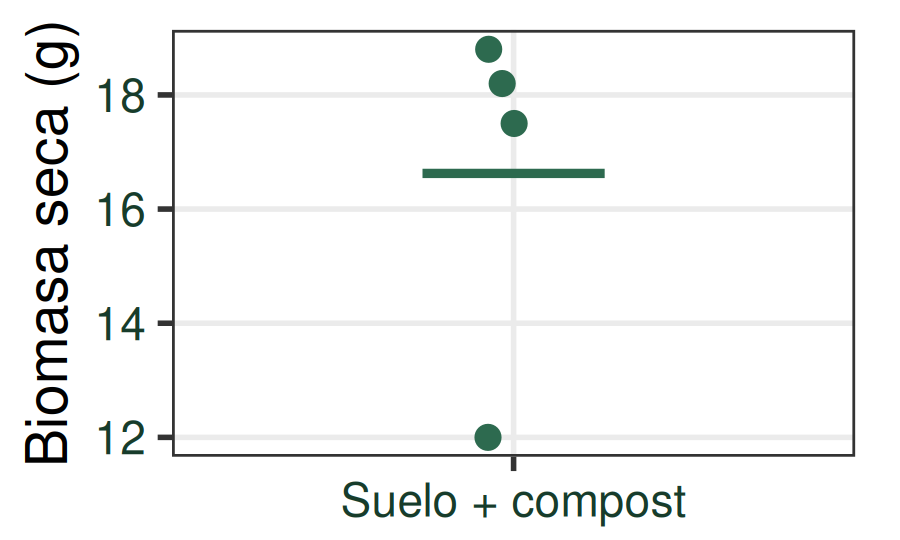
Mismo nivel del factor, respuestas diferentes.
Esta variación entre UE tratadas de la misma manera permite estimar el error experimental.
\(CM_{Error}=\frac{SC_{Error}}{gl_{Error}}\)
Se ilustran cuatro UE del nivel compost, pero el conjunto real sigue siendo n=21, siete por nivel. CM_Error combina la variación residual de los tres niveles. Replicar permite estimar el error experimental; no lo reduce por sí mismo. ε es error aleatorio del modelo; e es residuo ajustado. No usar todavía la palabra denominador.
El estadístico F
\(F=\frac{CM_{Sustrato}}{CM_{Error}}\)
ENTRE → CM SustratoNUMERADOR
DENTRO → CM ErrorDENOMINADOR
No importa sólo cuánto se apartan los datos de H₀, sino cuánto representa ese apartamiento respecto de la variabilidad esperable.
Como todo estadístico de prueba, F tiene una distribución de probabilidad bajo H₀.
Formaliza el cociente conceptual. CMTrat no se define como datos menos H0; esa frase sólo recupera la lógica de contraste de Clase 06. No mostrar aún F observado. CMError referencia la variación dentro de grupos.
¿Qué ocurre bajo H₀?
\(H_0:\mu_1=\mu_2=\mu_3=\mu\)
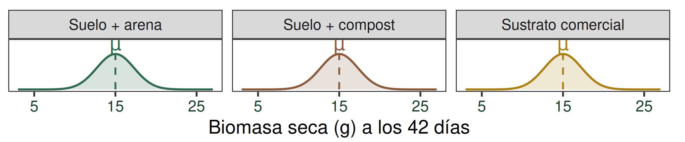
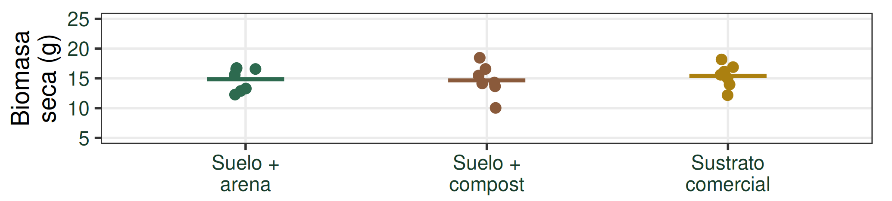
Medias poblacionales iguales; medias muestrales diferentes por azar.
\(CM_{Sustrato}\approx CM_{Error}\quad\Rightarrow\quad F\approx1\)
Bajo H0, ENTRE y DENTRO reflejan la misma fuente de variación aleatoria. Formalmente E(CMTrat)=E(CMError)=σ²; no se exige igualdad de los CM observados ni F=1. La razón de esperanzas no es la esperanza de la razón. F puede ser menor que 1; F>1 no implica significación y 1 no es un umbral universal. Estas muestras son ilustrativas, generadas con otra semilla bajo medias iguales; no son el DCA ni el DBCA que se analizarán.
Razonar sobre F
¿En cuál hay mayor variabilidad ENTRE? → Igual en ambos.
¿En cuál hay mayor variabilidad DENTRO?
\(F=\frac{CM_{Sustrato}}{CM_{Error}}\) ¿En cuál esperamos un F mayor?
Mismos paneles que D9, mismas medias, escala y tamaños. Primer avance: puntos y etiquetas simultáneos. Segundo: cociente. A tiene más dispersión; B menor denominador y mismo numerador, por lo que F es mayor en B. No solicitar cálculo visual exacto. Recordar F<1 posible; F>1 no basta para rechazar.
La estructura de la tabla ANOVA
Fuente de variación
gl
SC
CM
F
Sustrato
\(k-1\) \(SC_{Sustrato}\) \(\frac{SC_{Sustrato}}{k-1}\) \(\frac{CM_{Sustrato}}{CM_{Error}}\)
Error
\(n-k\) \(SC_{Error}\) \(\frac{SC_{Error}}{n-k}\) —
Total
\(n-1\) \(SC_{Total}\) —
—
k = número de grupos / niveles del factor · n = total de observaciones
Tabla teórica antes de la aplicación del procedimiento. No hay columna p ni resultados numéricos. No se calculan CM Total ni F Error/Total para esta prueba.
La pregunta antes del diseño
¿Difiere la biomasa seca media a los 42 días entre plantines de tomate cultivados con distintos tipos de sustrato?
¿Cuál es la población de interés?
Queremos comparar las distribuciones de biomasa seca que obtendríamos en plantines de tomate bajo cada uno de los tres sustratos, en las condiciones definidas por el experimento.
Una población objetivo de UE bajo condiciones definidas y tres distribuciones potenciales de respuesta bajo tratamientos. No afirmar tres poblaciones biológicas independientes. μ1, μ2, μ3 son medias de esas respuestas potenciales. Este ejemplo sigue siendo la variante hipotética DCA.
Reconstruimos el experimento
21 UE razonablemente homogéneas respecto de las fuentes de variación relevantes
Factor: tipo de sustrato
1 · Suelo + arena 2 · Suelo + compost 3 · Sustrato comercial
Aleatorización irrestricta de los tres tratamientos entre las 21 UE.
7 UE por nivel del factor
Diseño completamente aleatorizado (DCA)
Primero se ven las 21 macetas neutras, sin tratamiento. Se presentan factor y niveles. Después se revela la asignación completa guardada en datos_tomate.csv, ordenada por posición; no se sortea nuevamente. Los números 1/2/3 identifican los niveles además del color. Aleatorización completa con conteos fijados de siete por nivel, sin restricciones por bloques; la cuadrícula es una disposición visual de posiciones, no bloques. Sólo al final se nombra DCA. A continuación se retoma el procedimiento de hipótesis aprobado.
Cada UE aporta una medición
Después de 42 días, medimos la biomasa seca de cada plantín.
UE 18 20,0 g
UE 4 10,4 g
UE 13 13,3 g
UE 17 18,2 g
UE 16 14,7 g
UE 11 18,8 g
UE 20 15,0 g
UE 14 14,5 g
UE 10 17,5 g
UE 12 12,1 g
UE 8 18,2 g
UE 15 19,9 g
UE 19 22,4 g
UE 2 13,2 g
UE 5 15,2 g
UE 3 15,7 g
UE 1 10,8 g
UE 6 12,8 g
UE 21 16,4 g
UE 7 13,7 g
UE 9 12,0 g
Cada UE → una medición → una observación
Los valores se extraen de los mismos objetos leídos/generados por el análisis existente. El orden en las UE usa la posición de asignación guardada; no se sortean datos nuevos. Un solo avance revela las 21 biomasas. Las etiquetas UE permiten seguir cada observación hasta las tablas.
DCA: una fila por observación
21 observaciones · desplazá la tabla para ver todas las filas ↕
Una fila = una UE = una observación
Formato para analizar los datos en R y otros programas estadísticos.
La tabla larga contiene las 21 filas completas, repartidas en dos columnas visuales para legibilidad: primeras 11 y luego 10. No son dos variables adicionales ni tablas relacionadas; es la continuación de la misma base. Biomasa seca a los 42 días, en g. IDs, niveles, mesada cuando corresponde y biomasas contrastados con los CSV.
Hipótesis y nivel de significación
Paso 1 · Plantear H₀ y H₁
\(H_0:\mu_1=\mu_2=\mu_3\)
La biomasa seca media de los plantines de tomate es igual para los tres tipos de sustrato.
H₁: al menos una μᵢ es diferente.
Paso 2 · Fijar el nivel de significación α
\(\alpha=0{,}05\)
μi es la biomasa seca media poblacional a los 42 días bajo el nivel i de Sustrato. H1 no dice que todas difieran. Fijar α antes de observar resultados.
Estadístico y criterio de decisión
Paso 3 · Definir el estadístico y su distribución
\(F=\frac{CM_{Sustrato}}{CM_{Error}}\quad;\quad F\sim F_{2,18}\text{ bajo }H_0\)
gl₁ = 3 − 1 = 2 · gl₂ = 21 − 3 = 18
Paso 4 · Establecer el criterio de decisión
Rechazar H₀ si valor-p < α = 0,05.
Denominaciones y orden tomados de Clase 06. La distribución se define antes de calcular el F observado. La referencia exacta supone el modelo clásico; se estudiarán condiciones en Supuestos. La igualdad p=α tiene probabilidad cero con estadístico continuo; se conserva criterio p<α de Clase 06.
Volvamos a los datos
Paso 5 · Realizar los cálculos necesarios
¿Las medias muestrales parecen diferir? ¿Hay variabilidad dentro de cada tratamiento?
¿Son grandes las diferencias en relación con esa variabilidad?
Preguntar grandes o pequeñas respecto de la variabilidad, sin exigir estimar F a ojo. Los segmentos son medias, no intervalos. Datos simulados originales, 21 observaciones.
Tabla ANOVA del DCA
Paso 5 · Realizar los cálculos necesarios
Sustrato
2 87,25 43,62 6,29
Error
18 124,82 6,93
Total
20 212,07 —
Queremos llegar hasta acá: calcular F y su valor-p .
\(gl_{Sustrato}=k-1=3-1=2\)
\(gl_E=gl_T-gl_{Sustrato}=20-2=18\)
Comprobación: 3(7 − 1) = 18
\(SC_{Total}=SC_{Sustrato}+SC_{Error}\)
\(CM_{Sustrato}=\frac{SC_{Sustrato}}{2}=\text{43,62}\qquad CM_{Error}=\frac{SC_{Error}}{18}=\text{6,93}\)
43,62 vs 6,93¿Parecen similares?
\(F=\frac{CM_{Sustrato}}{CM_{Error}}=\frac{\text{43,62}}{\text{6,93}}=\text{6,29}\)
F cuantifica la diferencia entre los cuadrados medios.
Se construye en este orden: gl Total, gl Sustrato, gl Error, tres SC, dos CM, pausa de comparación y F. Los resultados provienen de los objetos ya validados; no se cambian datos ni redondeos internos. F y p se presentan desde el comienzo como destino, pero p se reserva para la distribución F. CM=SC/gl tiene naturaleza y dimensión de varianza: conecta con S²=SC/(n−1), sin convertir gl en una mera corrección por tamaño. Aquí Sustrato nombra la fuente concreta. F cuantifica la diferencia relativa entre CM, no una resta.
¿Qué significa F calculado?
\(F_c=\text{6,29}\)
El CM de Sustrato es 6,29 veces el CM del Error.
¿6,29 es suficientemente grande para rechazar H₀?
Necesitamos su distribución bajo H₀.
No decir veces mayor. Recuperar paso 3: ya definimos F(2,18); ahora usaremos esa distribución para interpretar el valor obtenido. La razón no informa por sí sola sobre significación.
F bajo H₀ y el p-valor
Paso 5 · Realizar los cálculos necesarios
\(F\sim F_{2,18}\text{ bajo }H_0\)
\(p=P(F_{2,18}\ge F_c\mid H_0)=\text{0,0085}\)
La curva representa los valores de F que se obtendrían por variación aleatoria bajo H0 en repeticiones del experimento. Primer avance: línea vertical en F exacto, mostrado redondeado. Segundo: toda la cola derecha visible, integrada hasta infinito para p. No se usa zoom ni curva dibujada a mano. La densidad es df(x,2,18); la integral coincide con pf. La cola continúa más allá de la ventana; se informa la magnitud truncada en verificacion_numerica.txt.
Decisión para el DCA
Paso 6 · Decidir sobre H₀
\(p=\text{0,0085}<\alpha=0{,}05\)
Rechazamos H₀.
El resultado sería poco frecuente bajo la igualdad de las tres medias poblacionales.
p no es probabilidad de que H0 sea verdadera, ni tamaño del efecto. La decisión está condicionada al modelo y diseño. El criterio se fijó antes de los cálculos.
Conclusión del DCA
Paso 7 · Concluir según la pregunta
Con α = 0,05, existe evidencia de un efecto del tipo de sustrato sobre la biomasa seca media de los plantines de tomate, en las condiciones definidas por este experimento.
Se rechaza H₀: la media no es igual para los tres sustratos.
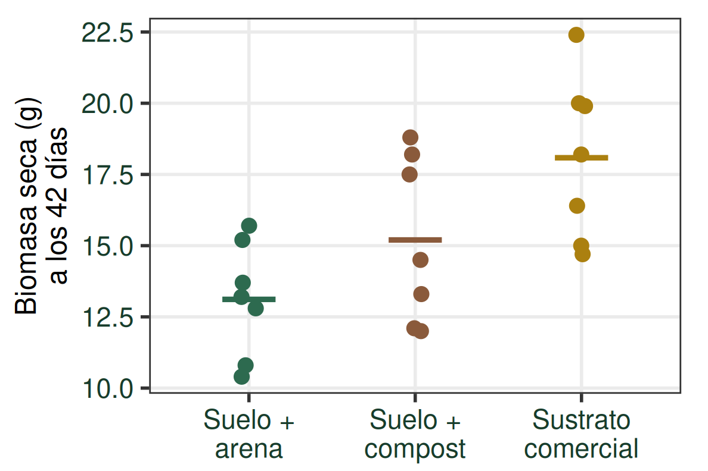
El ANOVA detecta un efecto global del Sustrato; todavía no indica entre qué niveles se encuentran las diferencias.
La inferencia se refiere a las distribuciones de respuestas de la población objetivo bajo condiciones representadas, no sólo a las siete UE observadas. Interpretación causal apoyada en la aleatorización experimental. Respuesta: biomasa seca a los 42 días. No identifica pares.
¿Y si detectamos una fuente de heterogeneidad en las UE?
Volvemos al DBCA de la Clase 10
7 mesadas
Asignación aleatoria de los tres niveles dentro de cada mesada .
DCA hipotético y DBCA original: dos estructuras experimentales diferentes.
Se recupera el diseño de Clase 10, con datos docentes nuevos simulados para ese diseño. No se agregan bloques retrospectivamente al CSV DCA. El esquema muestra la asignación reproducible de posiciones del nuevo DBCA. DBCA no es superior a DCA: responde a otra estructura. La interpretación causal proviene del diseño y asignación, no de p.
Cada UE aporta una medición
Después de 42 días, medimos la biomasa seca de cada plantín.
M1 UE 2 14,9 g
UE 1 12,0 g
UE 3 17,8 g
M2 UE 4 14,1 g
UE 6 15,6 g
UE 5 14,2 g
M3 UE 7 14,1 g
UE 9 16,5 g
UE 8 14,2 g
M4 UE 10 10,8 g
UE 12 15,2 g
UE 11 12,6 g
M5 UE 14 16,6 g
UE 13 15,9 g
UE 15 20,0 g
M6 UE 17 16,9 g
UE 16 14,0 g
UE 18 17,3 g
M7 UE 20 16,4 g
UE 19 15,6 g
UE 21 19,1 g
Cada UE → una medición → una observación
Los valores se extraen de los mismos objetos leídos/generados por el análisis existente. El orden en las UE usa la posición de asignación guardada; no se sortean datos nuevos. Un solo avance revela las 21 biomasas. Las etiquetas UE permiten seguir cada observación hasta las tablas.
DBCA: una fila por observación
21 observaciones · desplazá la tabla para ver todas las filas ↕
Una fila = una UE = una observación
Ahora conservamos también Mesada: forma parte del diseño y debe formar parte del análisis.
La tabla larga contiene las 21 filas completas, repartidas en dos columnas visuales para legibilidad: primeras 11 y luego 10. No son dos variables adicionales ni tablas relacionadas; es la continuación de la misma base. Biomasa seca a los 42 días, en g. IDs, niveles, mesada cuando corresponde y biomasas contrastados con los CSV.
En esto consiste el ANOVA
Particionar la variación total observada en distintas fuentes de variación.
DCA hipotético
\(SC_{Total}=SC_{Sustrato}+SC_{Error}\)
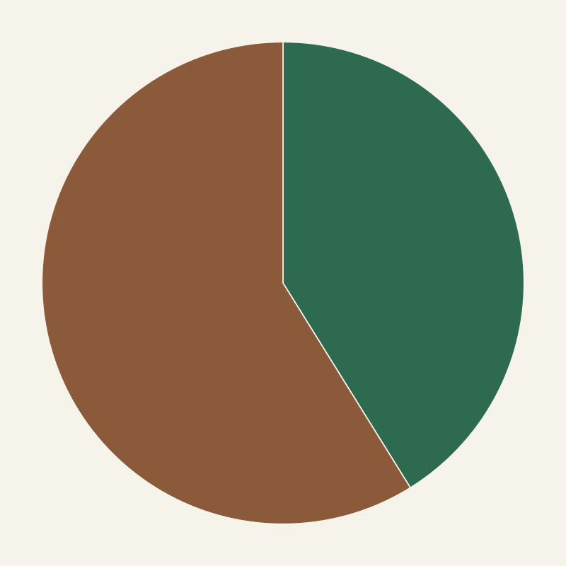
SC Sustrato = 87,25 SC Error = 124,82
DBCA de las mesadas
\(SC_{Total}=SC_{Sustrato}+SC_{Mesada}+SC_{Error}\)
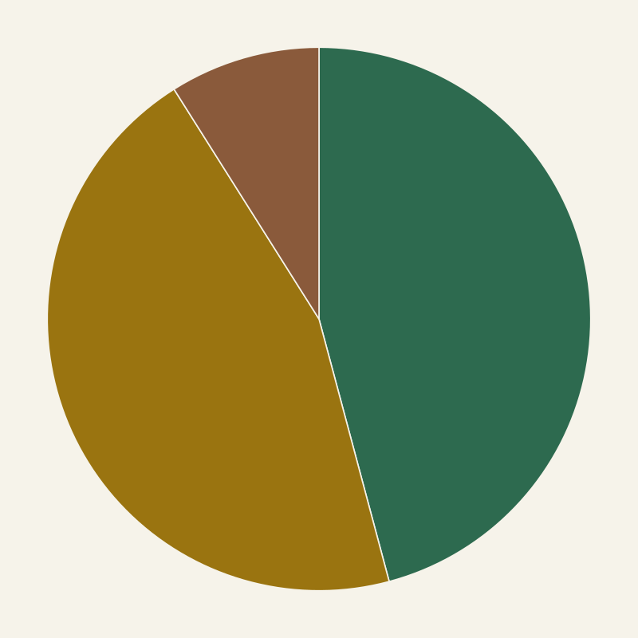
SC Sustrato = 45,62 SC Mesada = 44,98 SC Error = 8,92
El diseño experimental determina qué fuentes podemos identificar y separar en el análisis.
Las áreas representan SC, no CM. Cada círculo usa su propio dataset y escala total. No se mueve una porción del error DCA al bloque: son dos conjuntos distintos. No afirmar independencia probabilística de fuentes en términos genéricos. El ANOVA particiona la variabilidad total según el diseño.
La partición en el DBCA
\(SC_{Total}=SC_{Sustrato}+SC_{Mesada}+SC_{Error}\)
El diseño reconoció una fuente de heterogeneidad.
DBCA no es superior a DCA:
Partición aditiva del DBCA completo balanceado. Sustrato tiene gl2, Mesada gl6, Error gl12. No se exige ni se decide bloquear por un resultado significativo de Mesada.
ANOVA a dos criterios de clasificación
\(Y_{ij}=\mu+\alpha_i+B_j+\varepsilon_{ij}\)
\(\mu\) : media general
\(\alpha_i\) : efecto fijo del i-ésimo sustrato
\(B_j\) : efecto aleatorio de la j-ésima mesada
\(\varepsilon_{ij}\) : error aleatorio asociado a la observación ij
SUSTRATO · EFECTO FIJO
Son los tres sustratos elegidos específicamente para comparar.
MESADA · EFECTO ALEATORIO
No interesan esas siete mesadas particulares, sino la variabilidad atribuible a esa fuente de heterogeneidad.
Convención: letras griegas para efectos fijos \((\alpha_i)\) ; mayúsculas latinas para aleatorios \((B_j)\) .
i identifica Sustrato; j Mesada. μ es media general y α_i efectos fijos con suma cero. B_j es variable aleatoria con media cero y varianza σ²_Mesada; estos momentos se conservan sólo en notas para priorizar la distinción conceptual en pantalla. Para las pruebas F exactas se supone normalidad de B y ε, independencia entre bloques y respecto de ε, y varianza residual común. No desarrollar estos supuestos ahora. Silvia Sühring D27, D56–59 distingue α/τ para efectos fijos y mayúsculas para aleatorios. En el DBCA completo, balanceado y aditivo, los CM y cocientes F ya calculados siguen siendo los mismos: E(CM_Error)=σ²; E(CM_Mesada)=σ²+3σ²_Mesada; bajo H0 de Sustrato, E(CM_Sustrato)=σ². aov proporciona las SC y cocientes exactos de esta descomposición balanceada; no se presenta su ajuste fijo como una estimación de componentes de varianza. No introducir interacción ni un bloque teórico de modelos mixtos.
Dos preguntas, dos pruebas
Sustrato · efecto fijo
¿Difieren los tres sustratos?
\(H_0:\alpha_1=\alpha_2=\alpha_3=0\)
Equivale a \(H_0:\mu_1=\mu_2=\mu_3\)
\(H_A:\) algún \(\alpha_i\ne0\)
Interesan estos tres sustratos.
Mesada · efecto aleatorio
¿La heterogeneidad entre mesadas aporta variabilidad a la respuesta?
\(H_0:\sigma^2_{Mesada}=0\)
\(H_1:\sigma^2_{Mesada}>0\)
Pasos 1–2 · Plantear H₀ y H₁ y fijar α = 0,05.
Bloqueamos porque reconocimos a priori una fuente relevante de heterogeneidad.
Se presentan en paralelo las hipótesis de Sustrato fijo y Mesada aleatoria, con referencia posterior a sus filas de la misma tabla ANOVA. Para Sustrato α_i=0 equivale a igualdad de medias con parametrización de suma cero. Para Mesada se contrasta componente de varianza cero frente a positiva; no igualdad de medias de las siete mesadas. El contraste F de Mesada usa gl (6,12) y el de Sustrato (2,12) en este DBCA completo aditivo. Los valores calculados no se muestran en esta diapositiva; se introducen en el paso 5. No decidimos bloquear por el p ni repetimos siete pasos completos para Mesada.
DBCA: estadístico y criterio
Paso 3 · Definir el estadístico y su distribución
\(F_{Sustrato}=\frac{CM_{Sustrato}}{CM_{Error}}\sim F_{2,12}\text{ bajo }H_0\)
gl₁ = 3 − 1 = 2
Paso 4 · Establecer el criterio de decisión
Rechazar H₀ si valor-p < 0,05; de lo contrario, no rechazar.
Con n=21, se estiman media general, dos efectos independientes de sustrato y seis de mesada: 21−1−2−6=12 gl residuales. No se usan los 18 gl del DCA. Referencia F condicionada al modelo aditivo y sus supuestos.
Tabla ANOVA del DBCA
Paso 5 · Realizar los cálculos necesarios
Sustrato
2
45,62
22,81
30,70 0,0000191
Mesada
6
44,98
7,50
10,09 0,0004
Error
12
8,92
0,74
—
—
Total
20
99,51
—
—
—
\(F_c=\frac{\text{22,8090}}{\text{0,7429}}=\text{30,70}\)
Datos y resultados ya validados, conservados. En el DBCA completo balanceado y aditivo, la interpretación aleatoria de Mesada mantiene estos CM y las referencias F; cambia la hipótesis a σ²_Mesada=0. SC manuales y aov coinciden, cálculos sin redondeo intermedio. La fórmula simbólica se definió en paso 3; aquí, paso 5, se calcula F observado y después se revela p. F Sustrato usa CM Error con 12 gl; Mesada usa el mismo CM Error pero 6 gl en numerador. Guiones no son ceros.
DBCA: F bajo H₀
Paso 5 · Realizar los cálculos necesarios
\(F\sim F_{2,12}\text{ bajo }H_0\)
\(p=P(F_{2,12}\ge F_c\mid H_0)=\text{0,0000191}\)
Una sola distribución F(2,12) para la prueba de Sustrato. Línea exacta en F calculado; cola a la derecha es p. La integral numérica desde F hasta infinito coincide con pf y aov. Nada se dibuja a mano; etiquetas calculadas.
DBCA: decisión y conclusión
Paso 6 · Decidir sobre H₀
p = 0,0000191 < 0,05 → rechazamos H₀.
Paso 7 · Concluir según la pregunta
Con α = 0,05, existe evidencia de un efecto del tipo de sustrato sobre la biomasa seca media de los plantines de tomate, en las condiciones definidas por este experimento.
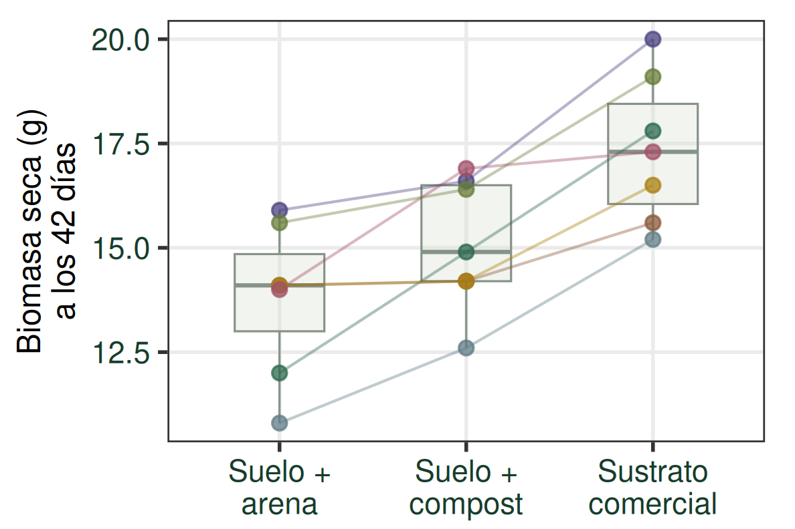
El ANOVA detecta un efecto global del Sustrato; todavía no indica entre qué niveles se encuentran las diferencias.
El boxplot sólo resume marginalmente cada sustrato y queda en segundo plano. Los puntos son las 21 UE, y las líneas conectan las tres UE de una misma mesada. Se conserva la estructura de bloqueo al interpretar. La evidencia corresponde al efecto global de los tres sustratos elegidos bajo estas condiciones.
La variación asociada a Mesada
p = 0,00042280
\(H_0:\sigma^2_{Mesada}=0\)
\(H_A:\sigma^2_{Mesada}>0\)
Hay evidencia de un componente de variación asociado a las mesadas .
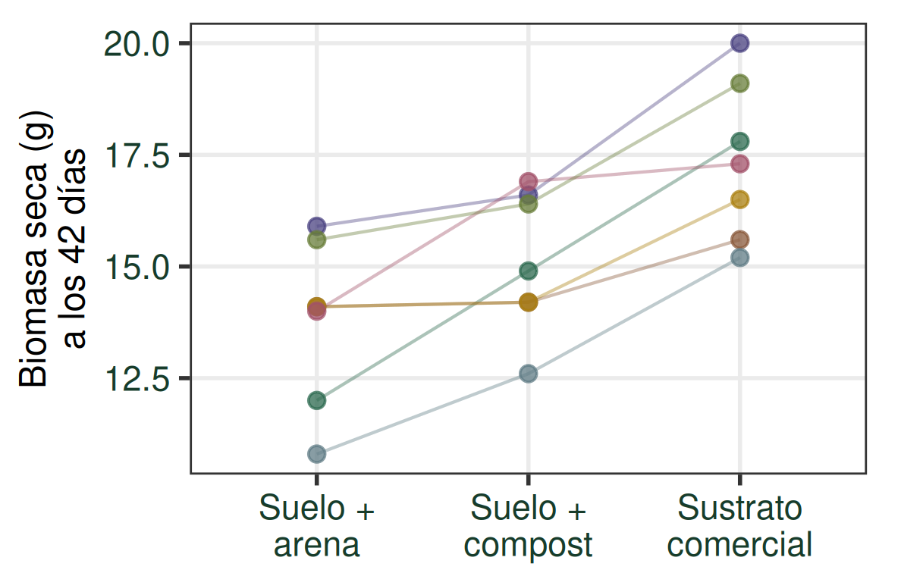
¿Las diferencias entre sustratos parecen mantenerse de manera parecida entre las distintas mesadas?
Perfiles por Mesada: x = Sustrato; cada línea conecta las tres UE del bloque. Sin cajas para priorizar los desplazamientos entre perfiles. D52 conserva cajas y responde por Sustrato; aquí se interpreta el componente de Mesada. La pregunta visual se retoma en D55 como puente a aditividad. Es inferencia sobre σ²_Mesada, no comparación de medias de estas siete mesadas particulares. F=10,0904 con gl (6,12).
Dos inferencias y una decisión de diseño
SUSTRATO
Evaluamos el efecto del tipo de sustrato sobre la biomasa seca media.
MESADA
Evaluamos la variabilidad atribuible a diferencias entre mesadas.
La decisión de bloquear se tomó a priori : había razones para considerar Mesada una fuente potencial de heterogeneidad, antes de observar los datos.
El ANOVA aporta evidencia a posteriori de que el bloqueo fue útil en este experimento: existe variabilidad asociada a las mesadas.
Al incorporar Mesada al diseño y al análisis, esa fuente de variación puede separarse del Error.
Sí interpretamos p de Mesada, que responde otra pregunta. Con p=0,00042280 se rechaza H0: sigma²_Mesada=0 frente a HA: sigma²_Mesada>0. La evidencia de utilidad se refiere a este experimento; no establece una regla general de bloquear sólo si el p resulta significativo. El diseño no se eligió retrospectivamente. No se introduce comparación entre medias de mesadas ni teoría extensa de componentes de varianza.
¿Qué supone este modelo aditivo?
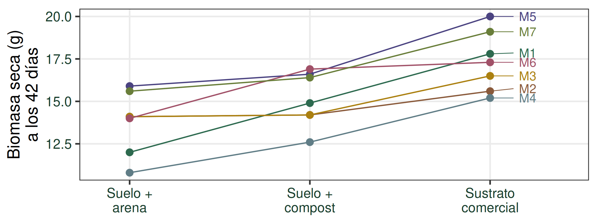
¿Las diferencias entre sustratos parecen mantenerse de manera parecida entre las distintas mesadas?
Sustrato y Mesada tienen efectos aditivos .
Recuperación deliberada del gráfico. No diagnosticar aditividad sólo porque las líneas parezcan aproximadamente paralelas, ni exigir paralelismo perfecto con error. La representación prepara el supuesto, sin desarrollar interacción. No confundir las líneas con curvas de respuesta de una misma UE.
Próxima clase: Supuestos
¿Qué debe cumplirse para confiar en este modelo?
Retomaremos el perfil por mesada para discutir aditividad y revisar las condiciones del análisis.
Después: comparaciones múltiples de medias.
Cerrar como una clase continua: problema de medias, fuentes, SC y CM, F bajo H0, prueba DCA, diseño DBCA y modelo aditivo. No desarrollar hoy diagnósticos, Tukey, ANCOVA, factoriales/interacciones ni modelos completo/reducido.